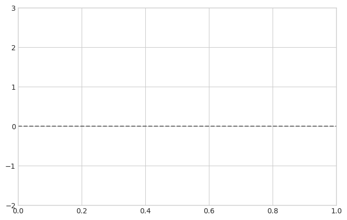

Student Name: [TYPE YOUR NAME HERE] Date: [TYPE DATE HERE]
5.0.1 Objectives
Write a custom Python function to handle unit conversions.
Use a for loop to process a list of experimental data.
Use NumPy arrays to calculate a potential energy surface and its physical force.
Use SymPy to perform a symbolic “sanity check” by taking exact derivatives and integrals.
Plot your results clearly using Matplotlib.
Code
# --- RUN THIS CELL FIRST --- # This loads the libraries you need for the assignment.import numpy as npimport matplotlib.pyplot as pltimport sympy as spplt.style.use('seaborn-v0_8-whitegrid')print("Environment ready! Let's do some chemistry.")
Environment ready! Let's do some chemistry.
5.1 Problem 1: The Universal Spectroscopy Converter
When reading computational chemistry papers, you will constantly need to compare your calculated Atomic Units (Hartrees) against experimental data reported in various units like Electron Volts (eV), kcal/mol, or wavenumbers (cm⁻¹).
Your Task: 1. Complete the convert_to_hartree function below. Use if, elif, and else statements to apply the correct conversion factor based on the starting_unit string provided. 2. Use a for loop to iterate over the provided experimental_data list. 3. Inside the loop, call your function to convert each value to Hartrees and print the result.
Hint: The conversion factors to multiply by are: * 1 eV = 0.036749 Hartree * 1 kcal/mol = 0.001593 Hartree * 1 cm^-1 = 0.000004556 Hartree
Code
def convert_to_hartree(value, starting_unit):"""Converts various energy units into Hartrees."""### YOUR CODE HERE: Write the if/elif logic #### if starting_unit == 'eV':# return value * 0.036749# elif ...returnNone# Replace this with your actual return variable!# Here is a list of lists containing experimental data.# Format: [Chemical feature, Value, Unit]experimental_data = [ ["Carbon C=C double bond energy", 146.0, "kcal/mol"], ["Hydrogen ionization energy", 13.6, "eV"], ["O-H vibrational stretch", 3600.0, "cm^-1"]]print("--- Conversion Results ---")### YOUR CODE HERE: Write a for loop to process experimental_data #### Hint: for item in experimental_data:# feature = item[0]# value = item[1]# unit = item[2]# ... call your function and print! ...
--- Conversion Results ---
5.2 Problem 2: Potential Energy and Physical Force
In the Python Primer, we plotted the Lennard-Jones potential for two Argon atoms. Now, you will do this for Krypton atoms, but with an added physics twist: you must also calculate and plot the physical force pushing the atoms around.
Recall from the Physics Refresher that Force is the negative numerical derivative of the potential energy: \[F(r) = -\frac{dV}{dr}\]
Your Task: 1. Create a numpy array for the distance \(r\) ranging from \(3.2\) to \(10.0\) Å with 200 points. 2. Calculate the potential energy array \(V\) for Krypton. 3. Use np.gradient() to calculate the Force array \(F\). (Don’t forget the negative sign!) 4. Plot both\(V\) and \(F\) on the same Matplotlib graph. Give them different colors and include a legend.
Krypton Parameters: * Well depth (\(\epsilon\)): \(1.40\) kJ/mol * Zero-crossing distance (\(\sigma\)): \(3.60\) Å
Code
# Krypton Parametersepsilon =1.40sigma =3.60### 1. Create the distance grid (r)# r = ...### 2. Calculate the Potential Energy (V)# V = 4 * epsilon * ((sigma / r)**12 - (sigma / r)**6)### 3. Calculate the Force (F)# Hint: First figure out the step size (dr) of your grid by subtracting r[0] from r[1]# dr = ...# F = ... ### 4. Plottingplt.figure(figsize=(8, 5))# YOUR CODE HERE: Add your plt.plot() commands, labels, and plt.legend()plt.axhline(0, color='black', linestyle='--', alpha=0.5) # Zero lineplt.ylim(-2.0, 3.0) # Zoom in to see the wellplt.show()

5.3 Problem 3: The “Sanity Check” (Symbolic Math)
Before applying numerical grids and arrays to an unknown system, computational scientists always test their code on a system with a known exact answer. This is called a “sanity check.”
To find these exact analytical answers, Python has a powerful symbolic math library called SymPy. It acts like a built-in calculus student—it can solve algebra, take derivatives, and do integrals exactly, leaving variables like \(\pi\) or \(x\) intact rather than turning them into floating-point decimals.
Your Task: We want to analyze a simple quadratic potential: \(V(x) = 2x^2 - 8\). 1. Run the first cell below to define the symbolic variable \(x\) and the equation \(V\). 2. In the second cell, use sp.solve() to find the roots (where \(V(x) = 0\)). 3. Use sp.diff() to find the exact analytical Force equation (\(F = -\frac{dV}{dx}\)). 4. Use sp.integrate() to find the exact definite integral (the area under the curve) of \(V(x)\) from \(x=0\) to \(x=2\).
Code
# 1. Define 'x' as a symbolic math variable (not a number or a numpy array!)x = sp.symbols('x')# 2. Define the potential energy equationV =2*x**2-8# Let's print it to see how sympy formats it beautifully!display(V)
\(\displaystyle 2 x^{2} - 8\)
Code
### YOUR CODE HERE #### 3. Find the roots (Where does V(x) cross zero?)# Hint: sp.solve(equation, variable)# roots = ...# print("Roots:", roots)# 4. Find the symbolic derivative to get the Force (F = -dV/dx)# Hint: sp.diff(equation, variable)# F_symbolic = ...# print("Analytical Force:", F_symbolic)# 5. Evaluate the definite integral of V from x=0 to x=2# Hint: sp.integrate(equation, (variable, lower_bound, upper_bound))# area = ...# print("Definite Integral:", area)
5.3.1 Conceptual Synthesis
Question 1: Look at your plot from Problem 2. At the exact bottom of the potential energy well (where the potential energy is at its most negative), what is the value of the Force? Does this make physical sense for a molecule at equilibrium?
[DOUBLE CLICK THIS CELL TO TYPE YOUR ANSWER]
Question 2: Why is it critical to perform a symbolic “sanity check” (like you did in Problem 3) on a simple equation before writing numerical grid code for a complex, unsolvable system (like a multi-electron atom)?